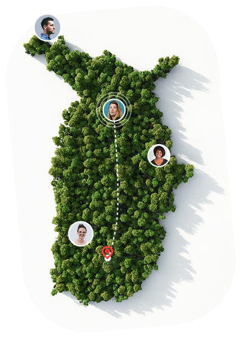
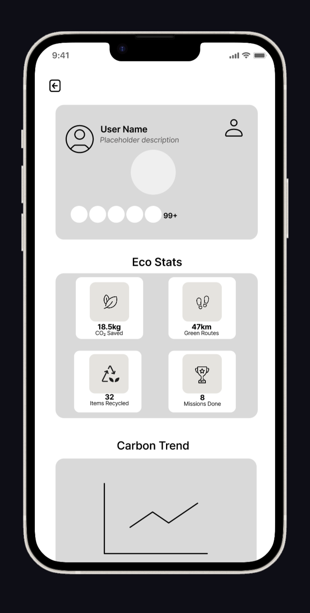
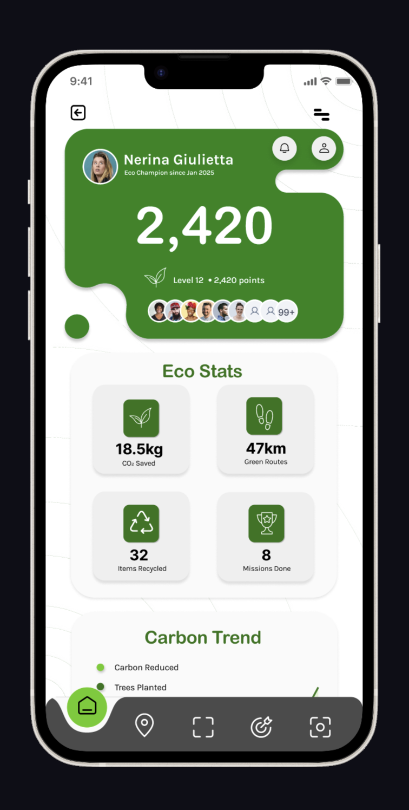
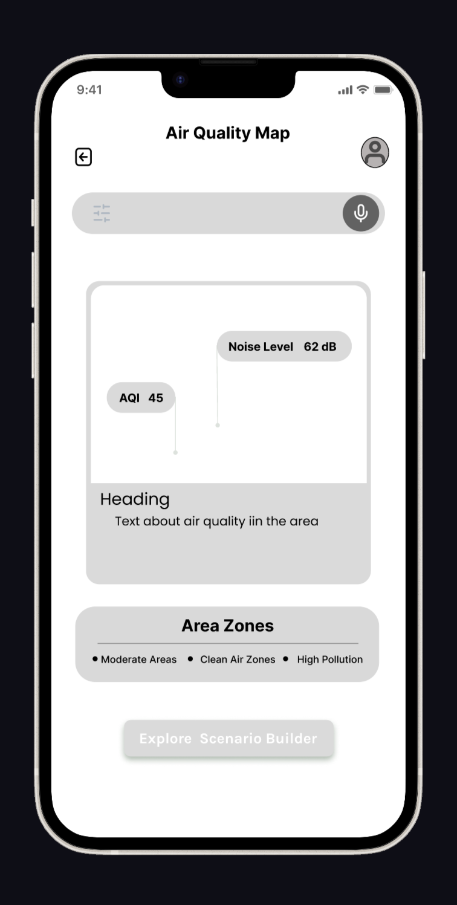
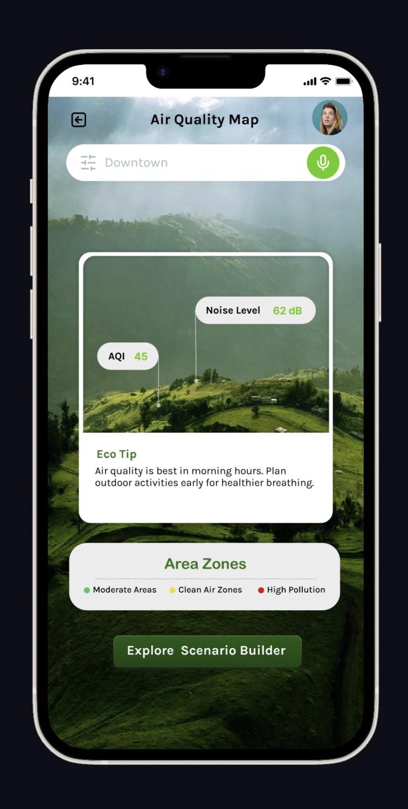
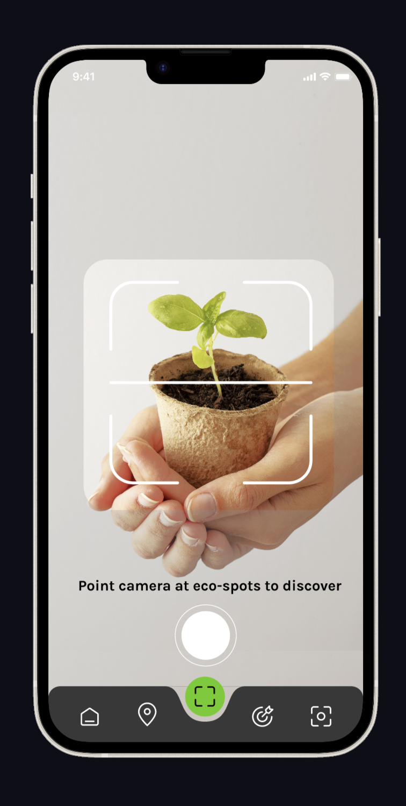
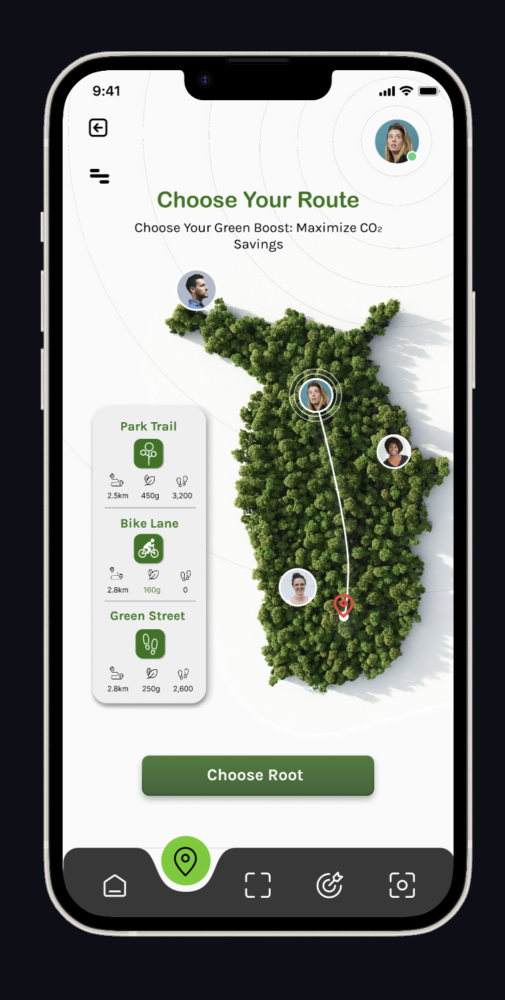
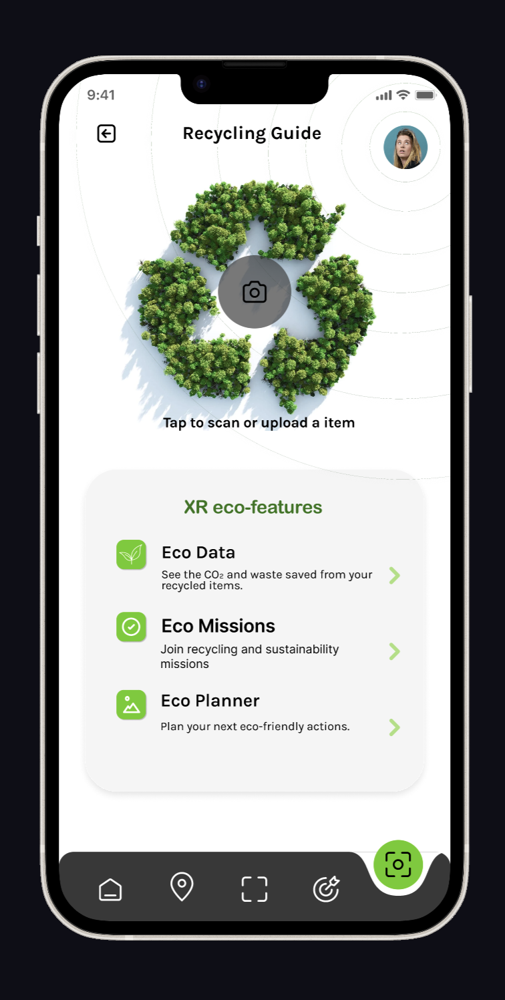
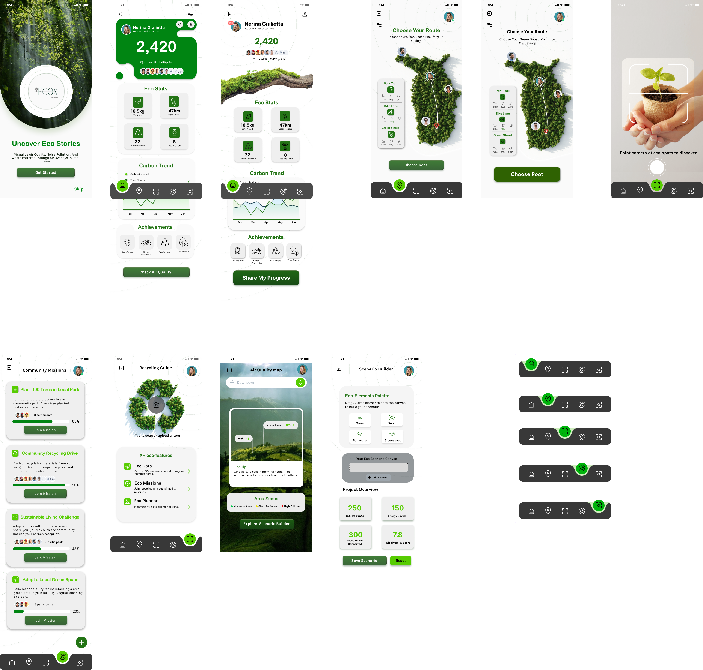

An AR and AI-powered sustainability app designed for a 2050 blended-reality world, where invisible environmental data becomes visible and actionable for every urban resident.

EcoX is a mobile AR and AI application conceived for a world where the boundaries between physical and digital have dissolved. The brief asked: design an app that enhances life in a blended-reality 2050 city. My answer was a platform that makes environmental data visible through augmented reality and turns passive urban residents into active sustainability participants.
This was a group participation project, but the entire UI/UX design was my responsibility. Every screen, every interaction, every visual decision was mine. It is also my most visually ambitious work to date, earning a competition certificate for design quality.
The design challenge: How do you make abstract data like CO2 levels and noise pollution feel personal, urgent, and actionable without overwhelming users in their everyday environment?
Modern cities generate enormous amounts of environmental data: air quality readings, noise pollution maps, carbon footprint trackers. But this information is buried in government portals, academic reports, or apps that require effort to seek out. The result is that most urban residents feel disconnected from the environment they live in and unmotivated to change their behavior.
The brief challenged me to design for a 2050 scenario where AR is ambient, AI is personal, and sustainability is a community behavior. The question became: what does eco-conscious urban life actually look like when the city itself becomes your interface?


From concept wireframes to the final high-fidelity design
The visual language needed to feel organic yet technological. Eco Green grounds the interface in nature and health. Clean Sky references open air and possibility. White space is generous to prevent the AR data overlays from feeling claustrophobic. The design uses Poppins for its geometric clarity, which pairs well with data-heavy screens.


Low fidelity wireframes evolving into the final visual system



The brief specifically asked for an interface that ensures all humans can experience life without limits. This pushed me to make deliberate accessibility decisions throughout the design.

Final 8-screen high-fidelity prototype spread
8 screens, fully interactive. Every AR feature and navigation flow is clickable.